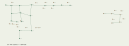
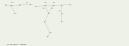
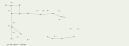
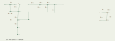
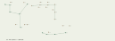
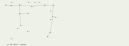
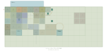
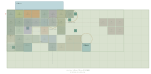
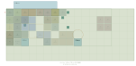

第十段階修正版：施設全体の搬送計画と建築境界
更新：2026-11-11（日本時間）。独立実験。追加の部屋・NPC・アイテムはない。
保存・配布・再開
• 改修前の固定タグ：stage10-frozen = 6ec66400d618a2f99a11f7de605cc557bdff24db。GitHubのstage10-developmentもこの改修前コミットを維持する。
• 修正版ブランチ：stage10-redesign。完成コミットはGitHubの同ブランチとSite保存版のsource.commit_shaを照合する。GitHub mainと本編は変更しない。
• サイト：https://tsugime-architecture-transport-lab.merkatzzz.chatgpt.site 。閲覧権限は従来の所有者限定のまま。
• 改修前の第十段階 ／ 改修前の報告・図面。比較コピーとは別に完全な正本をタグとZIPに保存する。
• 改修前の完全ZIP。2877追跡ファイルをgit archiveで保存し、再生成物とのSHA256一致を確認した。SHA256：7df16300d2bd7105baa2b3ffdaf589784a458bca9a6f9affe0cb61e02aa85186。
• 改修前の公開ビルド：/workspace/work/stage10-frozen-deployed-build.tar.gz。配布ZIPを含む、Site保存版15の公開に使用した入力ビルドを保全。gzipのSHA256：d7b792dca3450c47874a84ebda8f9243a10d4ae2bd5f57d784282c257cc1fd32。入力tarのSHA256：2987499c3afd8fce4ab51ee07864e251104463695b532a6dd19c0315054270a9。Site15側にも同じソースコミットの保存アーカイブを保持している（保存側tarハッシュは49dd75347ea95240ffcd1b8b58cc66a4d618a1aaa4733c4c069589fda5d2c47eで、入力tarとのバイト一致は確認していない）。単独の静的配信ファイル上限を超えるため実行環境に別保全。追跡ファイルだけから作った軽量復元ビルドも /workspace/work/stage10-frozen-build.tar.gz に残している。
• 復元worktreeで改修前の170テストが全件通過し、WebGLを明示的に無効にしたアプリ初期化も確認した。実GPUで起動したという意味ではない。
• 復元例：git worktree add --detach ../stage10-restored stage10-frozen。その中でnpm test、npm start。既存のツリーをresetしない。
• 修正版のソースZIP。展開後npm test、npm startでlocalhost:8000を開く。再生成はnpm run precompute、npm run audit、npm run package。固定タグの完全ZIPは別途配布する。
搬送実績と原因
調査対象は47搬送体・64可動チャンク。基本8×8×6m、三つの生活床と±6.4mの搬送デッキは同じ。明示的な固定設備は主EV・居住区EV・泉5・水路3の計10設備。EVの複数乗場や昇降路を別設備として重複集計せず、衝突用の15個の固定予約箱とは区別する。
改修前は25体がABCの実経路に登場し、22体が待機していた。後期の建築が一律に動かないわけではなく、第八段階のG1〜G5は5体すべて搬送されていた。一方、第六段階の14体中動くのはN4/S1の2体、第九段階のJ9は0、P9はBで0.4mの目標調整だけだった。
J9はstage9PlacementsのABC目標が同一。P9はBのみz25.2→25.6mと定義されていた。搬送リストはcoreRecipes→stage7Jobs→stage8Jobsと過去段階へ追加する構造で、J9のジョブはなく、P9も末尾の「ドック整列」だけだった。物理的な不可能性を探索して固定した証拠はなく、目標と列挙リストの設計が直接の原因だった。P9は実経路ではデッキへの往復を含め13.2m移動していたが、生活配置の変位は0.4mにすぎない。この二つを混同しない。
施設全体の新しい計画
facility-plan.jsへ全47体の導入段階・可動区分・移動目的または待機理由を集約した。transport.jsの過去段階別のリスト連鎖は廃止し、施設全体の目標差分を最後に必ず網羅する。未知の建築や理由未登録の建築はエラーにする。依存関係のある交換・途中退避は明示的な手順で表現する。
| 対象 | 変更 | 意味 |
|---|
| P9・J9 | Bで第二層から第一層へ12.8m下降。Cで第二層へ戻す | 四連結生活棟と廊下が、Bでは第一層G5へ、A/Cでは第二層G5へ接続。改修前Bの接続相手G3から変わる |
| U2 | Bで(50.4,12.8,8.4)から(58.8,12.8,0)へ | N4が空けた場所を利用。U1の南口から入る部屋が東口から入る部屋へ変わる。旧恒久継手を可動接続に変更 |
| G1・M1 | Cの第一層で並びをK2→G1→M1→G2へ変更 | AのK2→M1→G1→G2と異なる。二連結住宅の入口の隣接相手と交流室の役割を変える |
| G5の途中退避 | 採用範囲では下部デッキの(x41.6,z50.4)へ | 増設済み南の空欄を実際のA→B/B→Cで使用。従来の東側退避より往復実経路を各0.8m短縮 |
ABCの目標を変更した建築はM1/U2/G1/J9/P9の5体。新たに動くのはU2/J9。P9はすでに移動体として数えていたが、今回初めて生活配置の意味ある変化を割り当てた。G3など三連結建築の実搬送、H1/H2の分割・再連結、S1の遠隔帰還便、N4/G2の回転、C0の近道は維持した。
修正版の実搬送は27体、待機は20体。待機理由は全47体比較表と診断UIへ記録する。店舗・住戸301は参照経路と接客の基準、主EV前と水路・泉の前室は到達性の基準、遠隔4体は恒久通路を持つ帰還便の目的地として待機する。これらは物理的な固定設備とは分類しない。
比較集計
| 指標 | 改修前 | 修正版 |
|---|
| 可動設備／可動チャンク | 47／64 | 47／64 |
| 明示的な固定設備 | 10 | 10 |
| ABCで実際に移動／待機 | 25／22 | 27／20 |
| A→B | 29.8667秒 | 29.8667秒 |
| B→C | 39.0667秒 | 40.8667秒 |
| C→A | 17.3333秒 | 17.3333秒 |
| 採用設定の循環時間 | 86.2667秒 | 88.0667秒（+1.8秒、約2.1%） |
| P9の実経路合計 | 26.4m | 25.6m |
| G5の実経路合計 | 96.0m | 94.4m |
| Aの通行接続数／到達可能体 | 52／40 | 52／40 |
| Bの通行接続数／到達可能体 | 55／42 | 54／42 |
| Cの通行接続数／到達可能体 | 50／39 | 49／39 |
接続は通常扉を開けた完了配置、到達可能体は主EV・居住区EVのサービスを含むグラフで数える。独立通路成分の到達数はA/B/Cで41/43/40、変更前後で同数。搬送サービスまで含む到達可能体は40/47/39。遠隔区域は同じ階でも徒歩接続とは数えない。
徒歩未到達体はAで7、Bで5、Cで8で、改修前と同じ。AはC0/Q1が保管中、W1はBにだけ開く旧設備室、D1〜D4は遠隔区域。BのS1/D1〜D4は帰還便で扱う。CはさらにJ1の既存の孤立枝を含む。搬送体単位の孤立数は増えていない。細分したナビゲーション領域は旧・新とも70成分で、未到達成分はA/B/Cで29/27/30。店舗の作業区、固定視点で訪問する個室、家具や隔壁で生じる小領域も含む。搬送体数と混ぜず、各成分のID・セル数・到達判定を比較JSONに保存した。これら既存の小領域を全て通行化する変更は行っていない。水路W2はBに閉鎖するが、W0/W3は全周期、W2はA/Cに到達できる。
全体表はCSV、機械可読比較、改修前の全データ、修正版の全データに保存。全47体の名称・導入段階・構成・ABC座標と角度・各実経路・回転・上下移動・接続先・理由を含む。
搬送診断モード
右側の「搬送診断：全体のABC計画」を開く。対象選択または一覧のIDを押すと、その建築のABC座標・向き・実経路長・目標変位・回転角・上下移動量・接続先・待機理由を表示する。地図の建築選択とも連動する。
「俯瞰を搬送・待機・固定で色分け」を有効にすると、緑は実搬送する可動体、黄は待機する可動体、青は固定設備、白は選択中。今周期に動く体は明るく、実際の区間で移動中のIDも表示する。俯瞰の建築または輪郭から選択できる。通常探索の材質や衝突形状は変更しない。
診断データは条件ごと、一覧は周期ごと、詳細は選択ごとにキャッシュし、毎フレームの全体再集計やDOM全面再生成を避ける。新しい建築の登録工程はFACILITY-DESIGN.mdに記載した。
境界壁・部分開口
実際に確認できた欠落はV1の奥の居室。privateRoomsがx8〜16、z11〜16を指定しているのに、西側のx8、z11〜16mの壁データがなかった。内部セル境界なので外周壁生成からも補われず、5m開放されていた。一体搬送体の壁を一律に消す処理ではなく、手書きの室内仕切りと個室範囲データが一致していなかった。
partitions.jsで個室範囲の各辺から、外周壁が担当する範囲、既存の仕切り、通常扉、明示的開口、全高の固体で閉じた範囲を差し引き、不足する区間だけを室内固定壁として補う。外周壁は全体の外形、通常仕切りは建築の室内座標、接続壁は搬送接続の状態という役割を保つ。V1は5mの壁を追加、共用部の正規のセル境界は通れるまま。
2チャンクの境界で3m壁＋2m扉＋3m壁、3チャンク・4チャンク・L字建築で境界をまたぐ個室と長い壁を試験した。回転後の実メッシュへの光線とlocalClearの衝突が一致し、不要な内部搬送シャッターを生成しない。スクリーンショットに写った部屋の厳密な同定は、今回画像の添付がないため行っていない。コード上で再現できたV1と最小構成を修正・検証した。
水路・店舗・店主
第二・第三層用水路の旧底面は床下−0.65mから、外周の側壁は床上+0.16mから始まり、床下側面が覆われていなかった。water-section.jsに基礎・底・岸側壁・東側壁・端部・暗渠の暗い終端をまとめた。底面−0.85〜−0.65m、岸・外周の下部側壁−0.65〜+0.16mを連続させ、上部壁・歩道床へ接続する。固定水路の予約下端は以前から−0.85mなので、既存の搬送離隔を削らない。
水面−0.3m、幅4mの暗渠、軽い流水表現、回収ネットを想定する岸辺、各1チャンクの固定構造は維持。下部四側面の近距離光線検査で露出が閉じたことを確認した。第一層の48m円形探索水路の断面・歩行路・流水・配置は変更していない。
W2の接続がBで失われるため、固定側と可動側の開口を閉鎖し、警告時の新規入場を制限する。滞在者は通常の歩行でP9へ退避し、そのまま第一層へ同乗する試験を実施。瞬間移動は使わない。
水路入口の補完壁と継手側壁に同一面が重なる箇所も検出した。固定側補完材は接続状態ごとの形状を再利用し、静的面処理の前に更新する。流水線だけを静的面処理から除外することで、補完材と継手の重複を除去しつつ、形状キャッシュの整合性を保った。
店舗は、expandStage9で追加した側面・背面の3壁が、店舗高を持たずT1の3.8m/T2の3.4mで描画されていたのが原因。各壁へ店舗高2.4mを付け、床+0.16〜2.56mで止め、屋根の下面2.56mへ合わせた。チャンク外周6m壁は削らない。カウンター・棚・看板・布と金属の営業用遮蔽物を維持する。
NPCモデルは目と顔がローカル+Z向きなのに、通常姿勢をπ回転していた。勤務中の胴体は客側+Zへ固定し、会話時は頭部だけをローカル角±60度以内で向ける。個室では既存の訪問カメラ方向を向く。所在・営業時間・手動指定・遮蔽後のワープ・会話・取引は同じ仕組みを使う。
検証・保存互換・性能
• 3範囲×2方式×3遷移の18計画を、初期・全移動区間・終点で0.2mの離隔検査。回転包絡・上下搬送・同時移動・固定設備を含む。プレロードも全18件を受け入れることを確認する。
• P9/J9/U2/G1それぞれに同乗して6遷移ずつ実行。剛体内座標がずれず、各終点が目標と一致する。既存H1/H2・M1・回転体・EV・帰還便の試験も維持。
• 旧版復元170テスト通過。修正版の最終試験件数とチェック結果はevidence/stage10-redesign-verification.jsonおよび各ログを参照。
• 主EV・居住区EV、店舗、在室/不在・個室訪問、通常扉、アイテム、近道、泉と中和生物を回帰確認。供給経路12件と通常扉24件を別検査。
• 保存形式をschema2へ更新し、同じ保存スロットを使用。建築内の局所座標を保存し、旧schema0/1は旧ABC配置から新配置へ変換する。訪問・NPC手動指定・時計・所持品を保持する。旧B周期のW2にある保存点は、現在接続を担う第一層P9側へ移行して閉じ込めを防ぐ。新壁の位置に重なる旧保存点は近傍の有効な床へ調整し、見つからなければ同じ階の主EV乗場へ復元する。これは読込時の移行処理で、搬送中の移動ではない。
• 24条件の静的面処理は強制全面再計算と面積・被覆が一致。ABC×通常扉開閉6条件の露出した同法線重複面は0。通路光線、固定設備対実メッシュ掃引も確認。これを実WebGLのちらつき解消の証明とは扱わない。
• CPU比較は同じNodeハーネス、1280×720相当、3周期、renderer stubで行う。通常探索・搬送・計画生成・終了後・再生成回数をbefore/after JSONに保存。診断UIは別に初回集計、HTML文字列生成、俯瞰の有効/無効を測る。DOM描画やGPU/FPSの測定ではない。
CPU実測の要点：通常探索平均1.543→1.736ms、3周期後の平均0.773→0.856ms。初回メッシュ構築692.111→676.842ms。冷計画生成A/B/Cは944.936/1977.426/103.707→1134.332/2318.993/222.838ms。通常探索・安定後の増加と、到着・開放区間の最大約187msのスパイクが残る。診断初回集計361.278ms、一覧文字列生成1.252msで、条件・周期・選択のキャッシュを使用する。詳しい平均・p95・最大値と診断ON/OFFは性能表と本報告後半に記載する。
実画面と残る確認
管理プレビューを再試行したが、relay could not open browser port 4173: timed out waiting for relay readiness で失敗。Sitesスキルの指定手順で停止した。今回のWebGL目視、視点移動時のちらつき、構図の自然さ、実際の聴感は未確認。
新たな未実装ゲームシステムはない。冷たい状態からの計画生成、初回メッシュ構築と周期切替のスパイクは性能比較に記録し、今後の改善対象とする。固定水路・泉・EV・47体の建築を維持したまま、実ブラウザでの見た目と操作感を次の確認対象にする。
第十段階とのCPU比較
同一Nodeハーネス、1280×720相当、dt0.1、速度8、3周期。旧版→修正版を順に実行。rendererはstubで、WebGL/FPS/実DOM描画の結果ではない。実時間の変動があるため差の全てを変更の効果とは扱わない。
| 状態 | 旧平均ms | 新平均ms | 旧p95ms | 新p95ms | 旧最大ms | 新最大ms | 形状破棄 旧/新 |
|---|
| 通常探索 | 1.543 | 1.736 | 2.385 | 3.393 | 9.148 | 8.65 | 0/0 |
| 大型搬送中 | 2.778 | 1.783 | 8.062 | 8.022 | 118.391 | 14.989 | 10/0 |
| 回転中 | 2.547 | 2.751 | 8.445 | 8.365 | 12.761 | 11.135 | 0/0 |
| シャッター閉鎖・切替 | 6.493 | 7.107 | 9.917 | 9.03 | 174.161 | 208.199 | 6/3 |
| 同時搬送中 | 1.952 | 2.429 | 8.707 | 8.566 | 11.23 | 15.906 | 0/0 |
| 到着・開放時 | 8.692 | 9.599 | 11.356 | 12.826 | 194.075 | 186.939 | 194/192 |
| 3周期後の安定時 | 0.773 | 0.856 | 1.208 | 1.401 | 1.401 | 1.807 | 0/0 |
初回メッシュ構築：692.111→676.842ms。
| 冷計画生成 | 旧ms | 新ms |
|---|
| A | 944.936 | 1134.332 |
| B | 1977.426 | 2318.993 |
| C | 103.707 | 222.838 |
起動時は全18計画の検証済みマニフェストをロードして再利用する。未知の条件や変更後の最初の計画生成では上の冷生成コストがかかる。周期切替のスパイクも残り、平均値だけで性能達成とは判断しない。通常探索と安定後には毎フレームの形状破棄はない。
診断パネル初回集計 361.278ms、一覧・詳細のHTML文字列生成 1.252ms。俯瞰120フレームの平均は診断無効 0.948ms、有効 0.751ms、p95は 1.622 / 1.209ms。有効の方が小さい値でも改善効果とは解釈せず、同程度のばらつきとする。57輪郭の形状は再利用し、集計は条件、一覧は周期、詳細は選択が変わった時だけ更新する。
壁補完更新：{"calls":1483,"regenerated":11,"ms":14.387803000014173} → {"calls":1492,"regenerated":11,"ms":13.813957000014852}。継手更新：{"calls":1483,"regenerated":31,"ms":17.10218800002258} → {"calls":1492,"regenerated":31,"ms":19.741606000050524}。全フレームの呼出数と、周期・開閉で本当に再生成した回数を区別する。
全47搬送体の旧・新ABC比較
固定設備（主EV・居住区EV・泉5・水路3）は別枠の10設備。可動設備が待機しても固定設備とは数えない。目標変位と、デッキ昇降・退避を含む実経路を分ける。
| ID | チャンク | 旧→新 目標変位 A/B/C | 旧→新 実経路m A/B/C | 新接続 A/B/C | 設計理由 |
|---|
| R1 | 1 | 0.0m / 0.0m / 0.0m → 0.0m / 0.0m / 0.0m | 0.0 / 0.0 / 0.0 → 0.0 / 0.0 / 0.0 | R2・J1・F1 / C0・J1・F1 / R2・R3・F1 | 同じ住戸からの近道比較の基準として待機 |
| R2 | 1 | 16.8m / 16.8m / 0.0m → 16.8m / 16.8m / 0.0m | 29.6 / 29.6 / 0.0 → 29.6 / 29.6 / 0.0 | R1・J2・T1 / R3・J2 / R1・J2・T1 | C0の挿入・撤収で参照経路を変更 |
| R3 | 1 | 0.0m / 8.4m / 8.4m → 0.0m / 8.4m / 8.4m | 0.0 / 21.2 / 21.2 → 0.0 / 21.2 / 21.2 | V3・J1 / R2・J1 / R1・J2 | J1と位置を交換し南北通路を変更 |
| R4 | 1 | 0.0m / 0.0m / 0.0m → 0.0m / 0.0m / 0.0m | 0.0 / 0.0 / 0.0 → 0.0 / 0.0 / 0.0 | J3・F0 / J3・H1・F0 / J3・F0 | 第二層主EVの着床先と生活通路を維持 |
| T1 | 2 | 0.0m / 0.0m / 0.0m → 0.0m / 0.0m / 0.0m | 0.0 / 0.0 / 0.0 → 0.0 / 0.0 / 0.0 | R2・E1 / E3・L1・C0 / R2・E1 | 生活用品店と参照経路の目的地として待機 |
| T2 | 2 | 0.0m / 0.0m / 0.0m → 0.0m / 0.0m / 0.0m | 0.0 / 0.0 / 0.0 → 0.0 / 0.0 / 0.0 | E3・L1・J3 / E1・J3 / E3・L1 | 第二層店舗・東翼への接続を維持 |
| H1 | 2 | 21.1m / 21.1m / 0.0m → 21.1m / 21.1m / 0.0m | 29.6 / 64.8 / 0.0 → 29.6 / 64.8 / 0.0 | H2・J2 / R4 / H2・J2 | 広間北半を別階・西側へ運びH2との連結を変更 |
| L1 | 3 | 12.8m / 15.3m / 8.4m → 12.8m / 15.3m / 8.4m | 12.8 / 21.2 / 21.2 → 12.8 / 21.2 / 21.2 | T2・V2 / T1・V2・J2 / T2・V2・J3 | L字集会室が階と平面位置を変更 |
| J1 | 1 | 0.0m / 8.4m / 8.4m → 0.0m / 8.4m / 8.4m | 0.0 / 50.8 / 50.8 → 0.0 / 50.8 / 50.8 | R1・J2・R3 / R1・J2・R3 / なし | 南北枝の接続先を変更 |
| J2 | 1 | 0.0m / 0.0m / 0.0m → 0.0m / 0.0m / 0.0m | 0.0 / 0.0 / 0.0 → 0.0 / 0.0 / 0.0 | R2・J1・H1・V3 / J1・L1・R2・C0 / R2・R3・H1・V3 | C0挿入・撤収に対する分岐の基準点として待機 |
| J3 | 1 | 0.0m / 11.9m / 11.9m → 0.0m / 11.9m / 11.9m | 0.0 / 29.6 / 29.6 → 0.0 / 29.6 / 29.6 | R4・T2 / R4・T2 / R4・L1 | 交差部の階と位置を変更 |
| C0 | 1 | 42.5m / 42.5m / 0.0m → 42.5m / 42.5m / 0.0m | 48.4 / 48.4 / 0.0 → 48.4 / 48.4 / 0.0 | なし / R1・T1・J2 / なし | 保管位置から近道へ挿入・撤収 |
| E1 | 1 | 12.8m / 12.8m / 0.0m → 12.8m / 12.8m / 0.0m | 63.2 / 12.8 / 0.0 → 63.2 / 12.8 / 0.0 | T1・E2 / T2・E4・H2 / T1・E4 | 東翼居室の階を交換 |
| E2 | 1 | 0.0m / 12.8m / 12.8m → 0.0m / 12.8m / 12.8m | 0.0 / 46.4 / 12.8 → 0.0 / 46.4 / 12.8 | E1・U1・S1 / U1・E3 / U3・E3 | 東翼居室の階を交換 |
| E3 | 1 | 12.8m / 12.8m / 0.0m → 12.8m / 12.8m / 0.0m | 12.8 / 63.2 / 0.0 → 12.8 / 63.2 / 0.0 | T2・E4 / T1・E2 / T2・E2 | 東翼居室の階を交換 |
| E4 | 1 | 0.0m / 12.8m / 12.8m → 0.0m / 12.8m / 12.8m | 0.0 / 12.8 / 46.4 → 0.0 / 12.8 / 46.4 | E3・U3 / E1・U3・H2 / E1・U1・S1 | 東翼居室の階を交換 |
| H2 | 2 | 22.7m / 22.7m / 0.0m → 22.7m / 22.7m / 0.0m | 38.0 / 38.0 / 0.0 → 38.0 / 38.0 / 0.0 | H1・V3 / E1・E4・M1 / H1・V3 | 広間南半を別経路へ分離・再連結 |
| K1 | 1 | 0.0m / 0.0m / 0.0m → 0.0m / 0.0m / 0.0m | 0.0 / 0.0 / 0.0 → 0.0 / 0.0 / 0.0 | K2・F2 / K2・V3・F2 / K2・F2 | 第一層主EVの着床先として待機 |
| K2 | 1 | 0.0m / 0.0m / 0.0m → 0.0m / 0.0m / 0.0m | 0.0 / 0.0 / 0.0 → 0.0 / 0.0 / 0.0 | W0・K1・U5・M1 / W0・K1・U5 / W0・K1・U5・G1 | 第一層探索水路・生活通路の基準点として待機 |
| M1 | 1 | 27.0m / 27.0m / 0.0m → 27.0m / 21.1m / 16.8m | 46.4 / 46.4 / 0.0 → 46.4 / 29.6 / 29.6 | K2・G1・N1 / H2・G3 / G2・G1 | 上下交流室。CではG1の東に着床して住宅と待合の接続順を変更 |
| U1 | 1 | 0.0m / 0.0m / 0.0m → 0.0m / 0.0m / 0.0m | 0.0 / 0.0 / 0.0 → 0.0 / 0.0 / 0.0 | E2・N4・U2 / E2・U2 / E4・N4・U2 | 第三層東翼の入口を維持し、U2との接続方向を切り替える |
| U2 | 1 | 0.0m / 0.0m / 0.0m → 11.9m / 11.9m / 0.0m | 0.0 / 0.0 / 0.0 → 29.6 / 29.6 / 0.0 | U1・S1 / U1 / U1・S1 | BではN4が空ける場所へ移り、U1の南口から東口へ接続を変更 |
| U3 | 1 | 0.0m / 0.0m / 0.0m → 0.0m / 0.0m / 0.0m | 0.0 / 0.0 / 0.0 → 0.0 / 0.0 / 0.0 | E4・U4 / E4・N4・U4 / E2・U4 | 第二層東翼入口を維持 |
| U4 | 1 | 0.0m / 0.0m / 0.0m → 0.0m / 0.0m / 0.0m | 0.0 / 0.0 / 0.0 → 0.0 / 0.0 / 0.0 | U3・N2 / U3・N2 / U3・N2 | N2前室への恒常経路を維持 |
| U5 | 1 | 0.0m / 0.0m / 0.0m → 0.0m / 0.0m / 0.0m | 0.0 / 0.0 / 0.0 → 0.0 / 0.0 / 0.0 | K2・N1・V1 / K2・N1・V3 / K2・N1・V1 | 第一層住宅群への六メートル共用入口を維持 |
| N1 | 1 | 0.0m / 0.0m / 0.0m → 0.0m / 0.0m / 0.0m | 0.0 / 0.0 / 0.0 → 0.0 / 0.0 / 0.0 | M1・U5 / U5・G1 / U5 | 固定泉P1に対する供給室の向きを維持 |
| N2 | 1 | 0.0m / 0.0m / 0.0m → 0.0m / 0.0m / 0.0m | 0.0 / 0.0 / 0.0 → 0.0 / 0.0 / 0.0 | U4 / U4 / U4 | 固定泉P2と供給器官への到達を維持 |
| N3 | 1 | 0.0m / 0.0m / 0.0m → 0.0m / 0.0m / 0.0m | 0.0 / 0.0 / 0.0 → 0.0 / 0.0 / 0.0 | W3・A3 / W3・A3 / W3・A3 | 固定泉P3と第三層用水路への入口を維持 |
| N4 | 1 | 12.8m / 90° / 12.8m / 90° / 0.0m → 12.8m / 90° / 12.8m / 90° / 0.0m | 16.8 / 20.8 / 0.0 → 16.8 / 20.8 / 0.0 | U1 / U3 / U1 | 回転と上下搬送で泉PA/PBへの供給方向を変更 |
| S1 | 1 | 50.4m / 50.4m / 0.0m → 50.4m / 50.4m / 0.0m | 63.2 / 63.2 / 0.0 → 63.2 / 63.2 / 0.0 | E2・U2 / D1 / E4・U2 | 遠隔区域へ渡り帰還する搬送室 |
| D1 | 1 | 0.0m / 0.0m / 0.0m → 0.0m / 0.0m / 0.0m | 0.0 / 0.0 / 0.0 → 0.0 / 0.0 / 0.0 | D2 / S1・D2 / D2 | S1の遠隔着床先。恒久連結した遠隔区域の入口 |
| D2 | 1 | 0.0m / 0.0m / 0.0m → 0.0m / 0.0m / 0.0m | 0.0 / 0.0 / 0.0 → 0.0 / 0.0 / 0.0 | D1・D4 / D1・D4 / D1・D4 | 遠隔工房の恒久通路を維持 |
| D3 | 1 | 0.0m / 0.0m / 0.0m → 0.0m / 0.0m / 0.0m | 0.0 / 0.0 / 0.0 → 0.0 / 0.0 / 0.0 | D4 / D4 / D4 | 遠隔物置の恒久通路を維持 |
| D4 | 1 | 0.0m / 0.0m / 0.0m → 0.0m / 0.0m / 0.0m | 0.0 / 0.0 / 0.0 → 0.0 / 0.0 / 0.0 | D2・D3 / D2・D3 / D2・D3 | 遠隔区域の環状通路を維持 |
| V1 | 3 | 8.4m / 8.4m / 0.0m → 8.4m / 8.4m / 0.0m | 21.2 / 21.2 / 0.0 → 21.2 / 21.2 / 0.0 | U5 / Q1 / U5 | 幅広共用前室と点検廊下の接続を変更 |
| V2 | 2 | 12.8m / 15.3m / 8.4m → 12.8m / 15.3m / 8.4m | 12.8 / 21.2 / 21.2 → 12.8 / 21.2 / 21.2 | L1 / L1・A3 / L1 | 二連結住戸の階と西側接続を変更 |
| V3 | 1 | 28.2m / 28.2m / 0.0m → 28.2m / 28.2m / 0.0m | 42.4 / 42.4 / 0.0 → 42.4 / 42.4 / 0.0 | R3・J2・H2・A3 / K1・U5・Q1 / J2・H2・A3 | 階間搬送で居住区域への入口を変更 |
| A3 | 1 | 0.0m / 0.0m / 0.0m → 0.0m / 0.0m / 0.0m | 0.0 / 0.0 / 0.0 → 0.0 / 0.0 / 0.0 | V3・N3 / V2・N3 / V3・N3 | N3・住宅・固定用水路に至る共用玄関を維持 |
| Q1 | 2 | 10.6m / 10.6m / 0.0m → 10.6m / 10.6m / 0.0m | 14.8 / 14.8 / 0.0 → 14.8 / 14.8 / 0.0 | なし / V3・W1・V1 / なし | 予備点検廊下をBで挿入し旧設備室を開く |
| W1 | 1 | 0.0m / 0.0m / 0.0m → 0.0m / 0.0m / 0.0m | 0.0 / 0.0 / 0.0 → 0.0 / 0.0 / 0.0 | なし / Q1 / なし | Bの予備点検廊下で開く探索目的地として待機 |
| G1 | 2 | 8.4m / 8.4m / 0.0m → 8.4m / 11.9m / 8.4m | 21.2 / 21.2 / 0.0 → 21.2 / 29.6 / 38.0 | M1・G2 / N1・G2 / K2・M1 | CではM1と順序を交換し、K2から直接入る二連結住宅に変更 |
| G2 | 1 | 8.4m / 90° / 8.4m / 90° / 0.0m → 8.4m / 90° / 8.4m / 90° / 0.0m | 21.2 / 21.2 / 0.0 → 21.2 / 21.2 / 0.0 | G1・G4 / G1・G4 / M1・G4 | 現地・近傍回転で住宅と生活通路を接続 |
| G3 | 3 | 12.8m / 12.8m / 0.0m → 12.8m / 12.8m / 0.0m | 12.8 / 12.8 / 0.0 → 12.8 / 12.8 / 0.0 | G4・LF2 / M1・LF0 / G4・LF2 | 三連結居間を二つの階へ運び居住区EVと生活棟を接続 |
| G4 | 2 | 8.4m / 8.4m / 0.0m → 8.4m / 8.4m / 0.0m | 21.2 / 21.2 / 0.0 → 21.2 / 21.2 / 0.0 | G2・G3 / G2 / G2・G3 | 折れ通路の平面位置を変更して北住宅を再接続 |
| G5 | 1 | 12.8m / 12.8m / 0.0m → 12.8m / 12.8m / 0.0m | 48.0 / 48.0 / 0.0 → 47.2 / 47.2 / 0.0 | J9・LF0 / J9・LF2 / J9・LF0 | 居住区EVの住戸を階交換。南の増設空欄を実際に退避利用 |
| J9 | 1 | 0.0m / 0.0m / 0.0m → 12.8m / 12.8m / 0.0m | 0.0 / 0.0 / 0.0 → 12.8 / 12.8 / 0.0 | G5・P9 / G5・P9 / G5・P9 | G5に接続する生活廊下をBで第一層へ移す |
| P9 | 4 | 0.4m / 0.4m / 0.0m → 12.8m / 12.8m / 0.0m | 13.2 / 13.2 / 0.0 → 12.8 / 12.8 / 0.0 | J9・W2 / J9 / J9・W2 | 四連結生活棟をBで第一層へ運び、接続相手をG3からG5へ変更 |
改修前・修正版の図面比較
周期 A：第1〜3層の旧・新図面
第1層
改修前 修正版
修正版
第2層
改修前 修正版
修正版
第3層
改修前 修正版
修正版
周期 B：第1〜3層の旧・新図面
第1層
改修前 修正版
修正版
第2層
改修前 修正版
修正版
第3層
改修前 修正版
修正版
周期 C：第1〜3層の旧・新図面
第1層
改修前 修正版
修正版
第2層
改修前 修正版
修正版
第3層
改修前 修正版
修正版
搬送範囲・方式の比較図

各周期の平面図
周期 A
第3層の通路成分グラフ 第2層の通路成分グラフ
第2層の通路成分グラフ 第1層の通路成分グラフ
第1層の通路成分グラフ 周期 B
第3層の通路成分グラフ
第2層の通路成分グラフ
第1層の通路成分グラフ
周期 C
第3層の通路成分グラフ
第2層の通路成分グラフ
第1層の通路成分グラフ
遠隔区域と泉の配置
周期 A


周期 B


周期 C


各遷移の搬送経路・保管と一時退避
A→B

B→C

C→A
